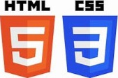
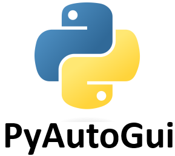

Aqui, compartilho minhas criações e experimentos de programação.
Sinta-se à vontade para navegar pelos projetos, ler suas descrições e, se desejar, verificar o código-fonte no GitHub. Espero que esses projetos inspirem e demonstrem minha paixão pela programação e minha busca contínua por aprendizado e aprimoramento. Obrigado por visitar e aproveite a jornada pelos Meus Projetos!
Projetos
Invasão Espacial
Invasão Espacial: Desenvolvido em Python utilizando a biblioteca Pygame. Este jogo estilo nave coloca você no comando contra vírus alieníginas. Atire, colete power-ups e proteja a galáxia. Que a força esteja com você! Saiba mais
Site Portfólio
Site Portfólio: Desenvolvido com HTML5 e CSS3 tem o objetivo de mostrar os meus projetos de programação. Saiba mais
Automação de Tarefas
Automação de Tarefas: Um bot de automação de tarefas desenvolvido em Python. Ele utiliza as bibliotecas PyAutoGUI e Pandas para preencher um cadastro de produtos com dados provenientes de uma base de dados. Saiba mais